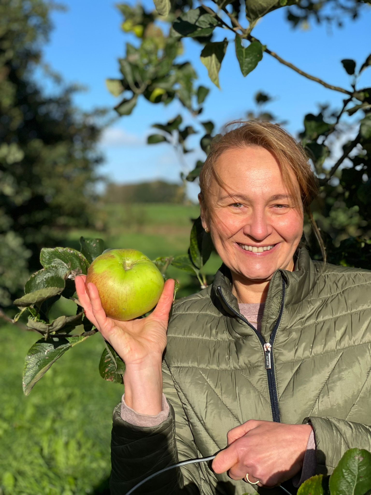

Eerbied voor de Garde
De naam van onze wijnmakerij is niet zomaar gekozen. Eind 17e eeuw kwam mijn voorvader, Maurits van Dinckelaar, naar Leeuwarden. Hij diende als officier bij de Friesche Garde, de persoonlijke bewaking van de Friese Nassau's.
Diezelfde geest van discipline, trots en standvastigheid proberen we te bottelen. Onze ciders dragen met trots de namen van de mannen die Friesland driehonderd jaar geleden dienden. Namen als Bellisaris en Rochebrune klinken nu weer, maar dan in het glas.